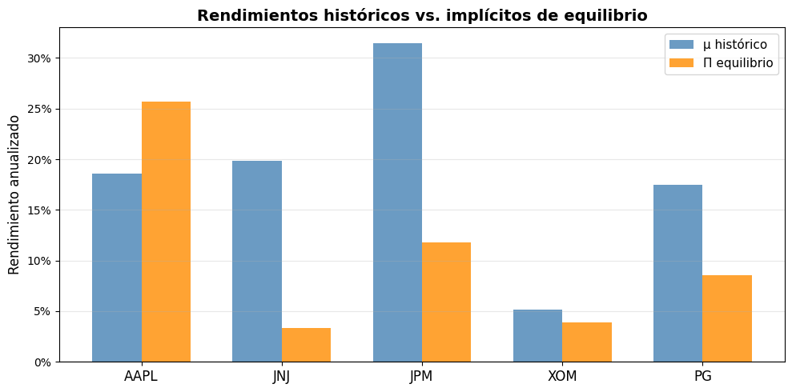
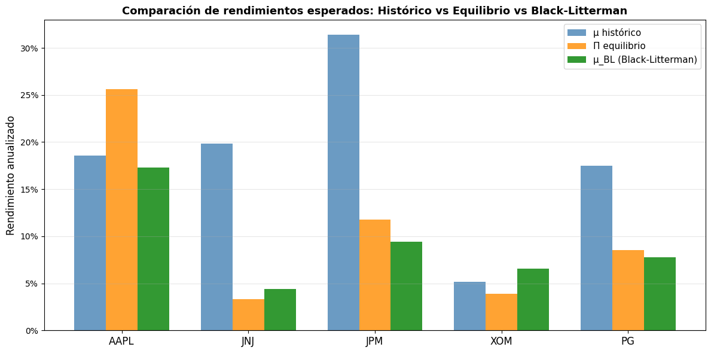
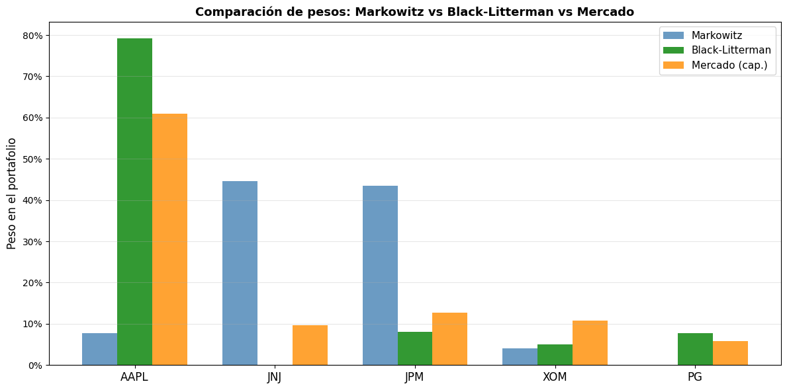
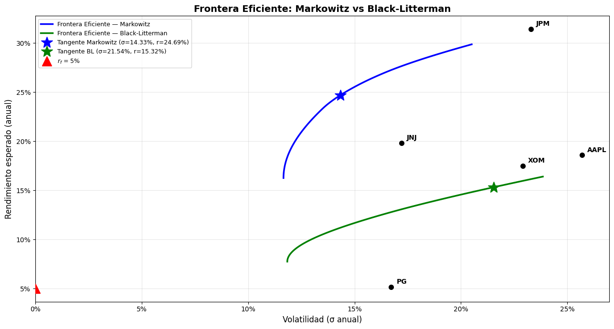
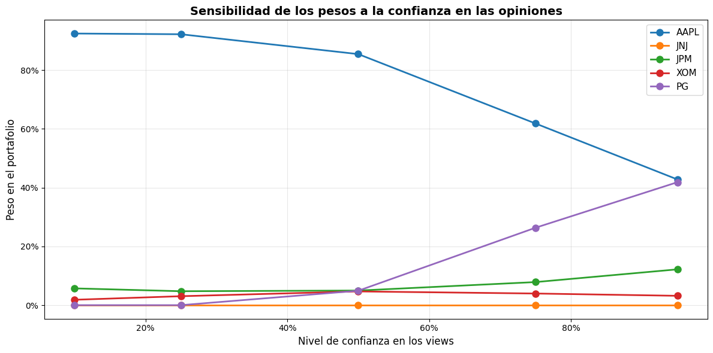
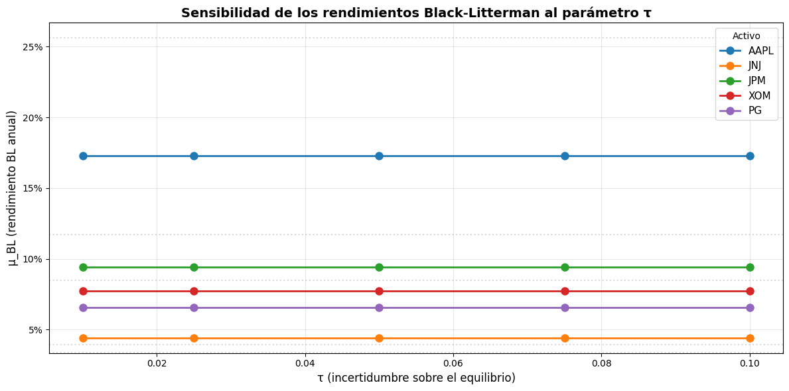
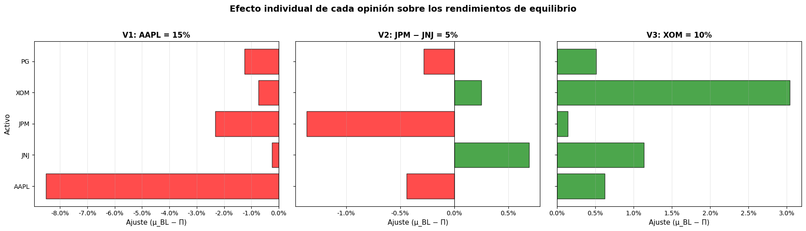

9. Modelo Black-Litterman#
El modelo de Black-Litterman (1992) resuelve dos problemas fundamentales de la optimización clásica de Markowitz: (descargar_diapositivas)
Sensibilidad extrema a los rendimientos esperados estimados: pequeños cambios en \(\mu\) generan portafolios radicalmente distintos y concentrados.
Dificultad de estimar :math:`mu`: usar promedios históricos produce estimaciones ruidosas que llevan a asignaciones poco intuitivas.
Idea central#
En lugar de estimar directamente los rendimientos esperados, el modelo parte del equilibrio de mercado: las ponderaciones de capitalización bursátil representan el portafolio óptimo implícito del mercado. A partir de ahí, se incorporan las opiniones (views) del inversionista de forma bayesiana.
Componentes del modelo#
Componente |
Símbolo |
Descripción |
|---|---|---|
Rendimientos de equilibrio |
\(\Pi\) |
Rendimientos implícitos derivados de capitalización de mercado |
Matriz de covarianza |
\(\Sigma\) |
Covarianza de los rendimientos de los activos |
Escalar de incertidumbre |
\(\tau\) |
Grado de incertidumbre sobre el equilibrio (típicamente entre 0.01 y 0.05) |
Matriz de views |
\(P\) |
Identifica qué activos participan en cada opinión |
Vector de views |
\(Q\) |
Rendimientos esperados según el inversionista |
Incertidumbre de views |
\(\Omega\) |
Matriz de confianza en cada opinión |
Fórmula de Black-Litterman#
Los rendimientos combinados se calculan como:
donde:
\(\Pi = \delta \Sigma w_{mkt}\) son los rendimientos de equilibrio implícitos
\(\delta\) es el coeficiente de aversión al riesgo del mercado: \(\delta = \frac{E(R_m) - r_f}{\sigma_m^2}\)
\(w_{mkt}\) son las ponderaciones de capitalización de mercado
[1]:
import numpy as np
import pandas as pd
import matplotlib.pyplot as plt
import yfinance as yf
from pypfopt import (
expected_returns,
risk_models,
EfficientFrontier,
BlackLittermanModel,
black_litterman,
)
# ─── Configuración ───
tickers = ["AAPL", "JNJ", "JPM", "XOM", "PG"]
benchmark = "^GSPC"
inicio = "2023-03-14"
fin = "2026-03-14"
rf_anual = 0.05 # Tasa libre de riesgo (5%)
rf_diario = (1 + rf_anual) ** (1 / 252) - 1 # Equivalente diaria
# ─── Descargar precios ───
todos = tickers + [benchmark]
datos = yf.download(todos, start=inicio, end=fin)["Close"]
datos.columns = [t if t != benchmark else "SP500" for t in datos.columns]
precios = datos.drop(columns="SP500") # Solo activos
precios_mkt = datos["SP500"] # Benchmark
# ─── Rendimientos logarítmicos diarios ───
rendimientos = np.log(datos / datos.shift(1)).dropna()
print(f"Período: {inicio} a {fin}")
print(f"Activos: {tickers}")
print(f"Tasa libre de riesgo: {rf_anual:.0%} anual")
print(f"Observaciones: {len(rendimientos)} días")
[*********************100%***********************] 6 of 6 completed
Período: 2023-03-14 a 2026-03-14
Activos: ['AAPL', 'JNJ', 'JPM', 'XOM', 'PG']
Tasa libre de riesgo: 5% anual
Observaciones: 752 días
1. Portafolio de Markowitz (referencia)#
Antes de aplicar Black-Litterman, estimamos el portafolio óptimo de Markowitz usando rendimientos medios históricos. Esto nos servirá de base de comparación para evaluar las mejoras del modelo BL.
[2]:
# ─── Rendimiento esperado y covarianza (Markowitz) ───
mu_hist = expected_returns.mean_historical_return(precios, frequency=252)
S = risk_models.sample_cov(precios, frequency=252)
# ─── Portafolio tangente de Markowitz ───
ef_mkt = EfficientFrontier(mu_hist, S)
ef_mkt.max_sharpe(risk_free_rate=rf_anual)
w_markowitz = ef_mkt.clean_weights()
ret_mkt, vol_mkt, sr_mkt = ef_mkt.portfolio_performance(
verbose=False, risk_free_rate=rf_anual
)
print("══════ PORTAFOLIO TANGENTE — MARKOWITZ ══════")
print(f"Rendimiento anual: {ret_mkt:.4%}")
print(f"Volatilidad anual: {vol_mkt:.4%}")
print(f"Ratio de Sharpe: {sr_mkt:.4f}")
print(f"\nPesos:")
for ticker, peso in w_markowitz.items():
print(f" {ticker}: {peso:.4%}")
print(f"\nRendimientos esperados (históricos anualizados):")
print(mu_hist.round(4).to_string())
══════ PORTAFOLIO TANGENTE — MARKOWITZ ══════
Rendimiento anual: 24.6863%
Volatilidad anual: 14.3312%
Ratio de Sharpe: 1.3737
Pesos:
AAPL: 7.7470%
JNJ: 44.6380%
JPM: 43.5220%
PG: 0.0000%
XOM: 4.0930%
Rendimientos esperados (históricos anualizados):
AAPL 0.1858
JNJ 0.1983
JPM 0.3143
PG 0.0519
XOM 0.1747
2. Ponderaciones de mercado (capitalización bursátil)#
El punto de partida de Black-Litterman es que el mercado ya es eficiente: las ponderaciones de capitalización bursátil de los activos representan el portafolio óptimo del mercado agregado.
A partir de estas ponderaciones y la matriz de covarianza, se derivan los rendimientos implícitos de equilibrio \(\Pi\).
donde \(\delta\) es el coeficiente de aversión al riesgo del mercado:
[3]:
# ─── Capitalización de mercado (market cap) ───
market_caps = {}
for t in tickers:
info = yf.Ticker(t).info
market_caps[t] = info.get("marketCap", 0)
mcap = pd.Series(market_caps, name="Market Cap")
print("══════ CAPITALIZACIÓN DE MERCADO ══════\n")
for t in tickers:
print(f" {t}: ${mcap[t] / 1e9:,.1f} B")
# ─── Ponderaciones de mercado ───
w_mkt = mcap / mcap.sum()
print(f"\n══════ PONDERACIONES DE MERCADO ══════\n")
for t in tickers:
print(f" {t}: {w_mkt[t]:.4%}")
# ─── Coeficiente de aversión al riesgo (delta) ───
ret_mercado_anual = rendimientos["SP500"].mean() * 252
vol_mercado_anual = rendimientos["SP500"].std() * np.sqrt(252)
delta = (ret_mercado_anual - rf_anual) / vol_mercado_anual**2
print(f"\n══════ PARÁMETROS DE EQUILIBRIO ══════")
print(f" E(Rm) anual: {ret_mercado_anual:.4%}")
print(f" σ(Rm) anual: {vol_mercado_anual:.4%}")
print(f" δ (aversión al riesgo): {delta:.4f}")
══════ CAPITALIZACIÓN DE MERCADO ══════
AAPL: $3,687.4 B
JNJ: $571.5 B
JPM: $778.0 B
XOM: $661.5 B
PG: $344.7 B
══════ PONDERACIONES DE MERCADO ══════
AAPL: 61.0184%
JNJ: 9.4568%
JPM: 12.8744%
XOM: 10.9466%
PG: 5.7039%
══════ PARÁMETROS DE EQUILIBRIO ══════
E(Rm) anual: 17.6274%
σ(Rm) anual: 14.7419%
δ (aversión al riesgo): 5.8105
3. Rendimientos implícitos de equilibrio (\(\Pi\))#
Los rendimientos de equilibrio son los que el mercado implícitamente asigna a cada activo, dado que las ponderaciones de capitalización son óptimas.
Si optimizamos un portafolio con estos rendimientos, las ponderaciones resultantes son exactamente las ponderaciones de capitalización de mercado: este es el punto de partida neutral del modelo.
[4]:
# ─── Rendimientos implícitos de equilibrio ───
# Π = δ · Σ · w_mkt
pi = black_litterman.market_implied_prior_returns(mcap, delta, S)
print("══════ RENDIMIENTOS IMPLÍCITOS DE EQUILIBRIO (Π) ══════\n")
comparacion_pi = pd.DataFrame({
"w_mkt": w_mkt,
"Π (equilibrio)": pi,
"μ (histórico)": mu_hist,
"Diferencia (Π − μ)": pi - mu_hist,
})
for col in comparacion_pi.columns:
comparacion_pi[col] = comparacion_pi[col].map("{:.4%}".format) if col != "w_mkt" else comparacion_pi[col].map("{:.2%}".format)
print(comparacion_pi.to_string())
# ─── Gráfico comparativo ───
fig, ax = plt.subplots(figsize=(10, 5))
x = np.arange(len(tickers))
ancho = 0.35
ax.bar(x - ancho / 2, mu_hist.values, ancho, label="μ histórico", color="steelblue", alpha=0.8)
ax.bar(x + ancho / 2, pi.values, ancho, label="Π equilibrio", color="darkorange", alpha=0.8)
ax.set_xticks(x)
ax.set_xticklabels(tickers, fontsize=12)
ax.set_ylabel("Rendimiento anualizado", fontsize=12)
ax.set_title("Rendimientos históricos vs. implícitos de equilibrio", fontsize=14, fontweight="bold")
ax.yaxis.set_major_formatter(plt.FuncFormatter(lambda y, _: f'{y:.0%}'))
ax.legend(fontsize=11)
ax.grid(True, alpha=0.3, axis="y")
ax.axhline(y=0, color="black", linewidth=0.8)
plt.tight_layout()
plt.show()
══════ RENDIMIENTOS IMPLÍCITOS DE EQUILIBRIO (Π) ══════
w_mkt Π (equilibrio) μ (histórico) Diferencia (Π − μ)
AAPL 61.02% 25.6492% 18.5809% 7.0683%
JNJ 9.46% 3.3506% 19.8311% -16.4805%
JPM 12.87% 11.7789% 31.4313% -19.6525%
PG 5.70% 3.9214% 5.1884% -1.2670%
XOM 10.95% 8.5170% 17.4704% -8.9534%

4. Definición de las opiniones del inversionista (Views)#
El inversionista puede expresar opiniones (views) sobre los rendimientos futuros. Hay dos tipos:
View absoluta#
El inversionista cree que un activo tendrá un rendimiento específico: > «AAPL tendrá un rendimiento anual de 15%»
View relativa#
El inversionista cree que un activo superará a otro por un margen determinado: > «JPM superará a JNJ en 5%»
Confianza en las opiniones#
Cada opinión tiene un nivel de confianza asociado (representado en la matriz \(\Omega\)). A mayor confianza, más peso tiene la opinión del inversionista sobre el equilibrio de mercado.
Definimos las siguientes opiniones para este ejemplo:
# |
Tipo |
Opinión |
Confianza |
|---|---|---|---|
1 |
Absoluta |
AAPL tendrá un rendimiento de 15% anual |
80% |
2 |
Relativa |
JPM superará a JNJ en 5% |
60% |
3 |
Absoluta |
XOM tendrá un rendimiento de 10% anual |
50% |
[5]:
# ─── Construcción de las matrices P, Q y de confianza ───
# Opiniones absolutas y relativas usando diccionarios
# PyPortfolioOpt acepta:
# - viewdict: {ticker: rendimiento_esperado} para views absolutas
# - Para views relativas necesitamos construir P y Q manualmente
# Matriz P (3 views × 5 activos):
# View 1 (absoluta): AAPL = 15% → P[0] = [1, 0, 0, 0, 0]
# View 2 (relativa): JPM - JNJ = 5% → P[1] = [0, -1, 1, 0, 0]
# View 3 (absoluta): XOM = 10% → P[2] = [0, 0, 0, 1, 0]
P = np.array([
[1, 0, 0, 0, 0], # AAPL tendrá 15%
[0, -1, 1, 0, 0], # JPM superará a JNJ en 5%
[0, 0, 0, 1, 0], # XOM tendrá 10%
])
Q = np.array([0.15, 0.05, 0.10]) # Rendimientos de cada view
# Niveles de confianza (entre 0 y 1)
confidences = [0.80, 0.60, 0.50]
print("══════ OPINIONES DEL INVERSIONISTA ══════\n")
print("Matriz P (views × activos):")
print(pd.DataFrame(P, columns=tickers, index=["View 1", "View 2", "View 3"]))
print(f"\nVector Q (rendimientos esperados): {Q}")
print(f"Confianzas: {confidences}")
══════ OPINIONES DEL INVERSIONISTA ══════
Matriz P (views × activos):
AAPL JNJ JPM XOM PG
View 1 1 0 0 0 0
View 2 0 -1 1 0 0
View 3 0 0 0 1 0
Vector Q (rendimientos esperados): [0.15 0.05 0.1 ]
Confianzas: [0.8, 0.6, 0.5]
5. Modelo Black-Litterman: rendimientos combinados#
Ahora combinamos los rendimientos de equilibrio (\(\Pi\)) con las opiniones del inversionista para obtener los rendimientos Black-Litterman.
El parámetro \(\tau\) controla la incertidumbre sobre el equilibrio de mercado. Un valor bajo (por ejemplo, \(\tau = 0.05\)) indica alta confianza en el equilibrio. Usaremos \(\tau = 0.05\) como es convencional.
La matriz \(\Omega\) (incertidumbre de los views) se calcula automáticamente a partir de las confianzas usando el método de Idzorek, que permite expresar la confianza como un porcentaje intuitivo (0% = sin confianza, 100% = certeza total).
[6]:
# ─── Modelo Black-Litterman ───
tau = 0.05 # Incertidumbre sobre el equilibrio
bl = BlackLittermanModel(
S,
pi=pi, # Rendimientos de equilibrio
P=P, # Matriz de views
Q=Q, # Vector de views
omega="idzorek", # Método para calcular Ω
view_confidences=confidences, # Confianzas por view
tau=tau,
)
# ─── Rendimientos Black-Litterman ───
mu_bl = bl.bl_returns()
S_bl = bl.bl_cov()
print("══════ RENDIMIENTOS BLACK-LITTERMAN ══════\n")
tabla_ret = pd.DataFrame({
"μ histórico": mu_hist,
"Π equilibrio": pi,
"μ_BL (combinado)": mu_bl,
"Ajuste BL (μ_BL − Π)": mu_bl - pi,
})
for col in tabla_ret.columns:
tabla_ret[col] = tabla_ret[col].map("{:.4%}".format)
print(tabla_ret.to_string())
print(f"\nParámetros:")
print(f" τ = {tau}")
print(f" Método Ω: Idzorek")
══════ RENDIMIENTOS BLACK-LITTERMAN ══════
μ histórico Π equilibrio μ_BL (combinado) Ajuste BL (μ_BL − Π)
AAPL 18.5809% 25.6492% 17.2678% -8.3814%
JNJ 19.8311% 3.3506% 4.3925% 1.0419%
JPM 31.4313% 11.7789% 9.4270% -2.3519%
PG 5.1884% 3.9214% 6.5710% 2.6496%
XOM 17.4704% 8.5170% 7.7587% -0.7584%
Parámetros:
τ = 0.05
Método Ω: Idzorek
[7]:
# ─── Gráfico: comparación de rendimientos ───
fig, ax = plt.subplots(figsize=(12, 6))
x = np.arange(len(tickers))
ancho = 0.25
ax.bar(x - ancho, mu_hist.values, ancho, label="μ histórico", color="steelblue", alpha=0.8)
ax.bar(x, pi.values, ancho, label="Π equilibrio", color="darkorange", alpha=0.8)
ax.bar(x + ancho, mu_bl.values, ancho, label="μ_BL (Black-Litterman)", color="green", alpha=0.8)
ax.set_xticks(x)
ax.set_xticklabels(tickers, fontsize=12)
ax.set_ylabel("Rendimiento anualizado", fontsize=12)
ax.set_title("Comparación de rendimientos esperados: Histórico vs Equilibrio vs Black-Litterman",
fontsize=13, fontweight="bold")
ax.yaxis.set_major_formatter(plt.FuncFormatter(lambda y, _: f'{y:.0%}'))
ax.legend(fontsize=11)
ax.grid(True, alpha=0.3, axis="y")
ax.axhline(y=0, color="black", linewidth=0.8)
plt.tight_layout()
plt.show()

6. Portafolio óptimo con Black-Litterman#
Usamos los rendimientos combinados \(\mu_{BL}\) y la covarianza posterior \(\Sigma_{BL}\) para optimizar el portafolio tangente (máximo Sharpe).
Al comparar con el portafolio de Markowitz, esperamos que el portafolio BL:
Tenga pesos más diversificados y estables
Refleje tanto la información del mercado como las opiniones del inversionista
Sea menos sensible a errores de estimación
[8]:
# ─── Portafolio tangente con Black-Litterman ───
ef_bl = EfficientFrontier(mu_bl, S_bl)
ef_bl.max_sharpe(risk_free_rate=rf_anual)
w_bl = ef_bl.clean_weights()
ret_bl, vol_bl, sr_bl = ef_bl.portfolio_performance(
verbose=False, risk_free_rate=rf_anual
)
print("══════ PORTAFOLIO TANGENTE — BLACK-LITTERMAN ══════")
print(f"Rendimiento anual: {ret_bl:.4%}")
print(f"Volatilidad anual: {vol_bl:.4%}")
print(f"Ratio de Sharpe: {sr_bl:.4f}")
print(f"\nPesos:")
for ticker, peso in w_bl.items():
print(f" {ticker}: {peso:.4%}")
# ─── Comparación directa ───
print("\n══════ COMPARACIÓN MARKOWITZ vs BLACK-LITTERMAN ══════\n")
tabla_comp = pd.DataFrame({
"w Markowitz": pd.Series(w_markowitz),
"w Black-Litterman": pd.Series(w_bl),
"w Mercado": w_mkt,
})
tabla_comp.index.name = "Activo"
tabla_display = tabla_comp.copy()
for col in tabla_display.columns:
tabla_display[col] = tabla_display[col].map("{:.2%}".format)
print(tabla_display.to_string())
print(f"\n{'Métrica':<22s} {'Markowitz':>12s} {'Black-Litterman':>16s}")
print(f"{'─' * 52}")
print(f"{'Rendimiento anual':<22s} {ret_mkt:>12.4%} {ret_bl:>16.4%}")
print(f"{'Volatilidad anual':<22s} {vol_mkt:>12.4%} {vol_bl:>16.4%}")
print(f"{'Ratio de Sharpe':<22s} {sr_mkt:>12.4f} {sr_bl:>16.4f}")
══════ PORTAFOLIO TANGENTE — BLACK-LITTERMAN ══════
Rendimiento anual: 15.3240%
Volatilidad anual: 21.5368%
Ratio de Sharpe: 0.4794
Pesos:
AAPL: 79.0650%
JNJ: 0.0000%
JPM: 8.1340%
PG: 7.4720%
XOM: 5.3290%
══════ COMPARACIÓN MARKOWITZ vs BLACK-LITTERMAN ══════
w Markowitz w Black-Litterman w Mercado
Activo
AAPL 7.75% 79.06% 61.02%
JNJ 44.64% 0.00% 9.46%
JPM 43.52% 8.13% 12.87%
PG 0.00% 7.47% 5.70%
XOM 4.09% 5.33% 10.95%
Métrica Markowitz Black-Litterman
────────────────────────────────────────────────────
Rendimiento anual 24.6863% 15.3240%
Volatilidad anual 14.3312% 21.5368%
Ratio de Sharpe 1.3737 0.4794
[9]:
# ─── Gráfico de pesos comparativo ───
fig, ax = plt.subplots(figsize=(12, 6))
x = np.arange(len(tickers))
ancho = 0.25
w_mk_vals = [w_markowitz.get(t, 0) for t in tickers]
w_bl_vals = [w_bl.get(t, 0) for t in tickers]
w_mkt_vals = w_mkt.values
ax.bar(x - ancho, w_mk_vals, ancho, label="Markowitz", color="steelblue", alpha=0.8)
ax.bar(x, w_bl_vals, ancho, label="Black-Litterman", color="green", alpha=0.8)
ax.bar(x + ancho, w_mkt_vals, ancho, label="Mercado (cap.)", color="darkorange", alpha=0.8)
ax.set_xticks(x)
ax.set_xticklabels(tickers, fontsize=12)
ax.set_ylabel("Peso en el portafolio", fontsize=12)
ax.set_title("Comparación de pesos: Markowitz vs Black-Litterman vs Mercado",
fontsize=13, fontweight="bold")
ax.yaxis.set_major_formatter(plt.FuncFormatter(lambda y, _: f'{y:.0%}'))
ax.legend(fontsize=11)
ax.grid(True, alpha=0.3, axis="y")
plt.tight_layout()
plt.show()

7. Frontera eficiente: Markowitz vs Black-Litterman#
Comparamos las fronteras eficientes generadas con las estimaciones de Markowitz (rendimientos históricos) y de Black-Litterman (rendimientos combinados), para visualizar cómo las opiniones del inversionista desplazan la frontera de oportunidades.
[10]:
# ─── Función para generar puntos de frontera eficiente ───
def generar_frontera(mu_input, S_input, n_puntos=80):
"""Genera puntos (volatilidad, rendimiento) de la frontera eficiente."""
# Obtener mínima varianza para el rango inferior
ef_temp = EfficientFrontier(mu_input, S_input)
ef_temp.min_volatility()
r_min, _, _ = ef_temp.portfolio_performance(verbose=False)
vols, rets = [], []
for target in np.linspace(r_min, mu_input.max() * 0.95, n_puntos):
try:
ef_temp = EfficientFrontier(mu_input, S_input)
ef_temp.efficient_return(target_return=target)
r, v, _ = ef_temp.portfolio_performance(verbose=False)
rets.append(r)
vols.append(v)
except Exception:
continue
return np.array(vols), np.array(rets)
# ─── Fronteras eficientes ───
vols_mk, rets_mk = generar_frontera(mu_hist, S)
vols_bl, rets_bl = generar_frontera(mu_bl, S_bl)
# ─── Gráfico ───
fig, ax = plt.subplots(figsize=(13, 7))
# Fronteras
ax.plot(vols_mk, rets_mk, "b-", linewidth=2.5, label="Frontera Eficiente — Markowitz")
ax.plot(vols_bl, rets_bl, "g-", linewidth=2.5, label="Frontera Eficiente — Black-Litterman")
# Portafolios tangentes
ax.plot(vol_mkt, ret_mkt, "b*", markersize=18, zorder=5,
label=f"Tangente Markowitz (σ={vol_mkt:.2%}, r={ret_mkt:.2%})")
ax.plot(vol_bl, ret_bl, "g*", markersize=18, zorder=5,
label=f"Tangente BL (σ={vol_bl:.2%}, r={ret_bl:.2%})")
# Activo libre de riesgo
ax.plot(0, rf_anual, "r^", markersize=14, zorder=5, label=f"$r_f$ = {rf_anual:.0%}")
# Activos individuales
for t in tickers:
r_i = mu_hist[t]
v_i = np.sqrt(S.loc[t, t])
ax.plot(v_i, r_i, "ko", markersize=7, zorder=4)
ax.annotate(t, (v_i, r_i), textcoords="offset points",
xytext=(8, 5), fontsize=10, fontweight="bold")
ax.set_xlabel("Volatilidad (σ anual)", fontsize=12)
ax.set_ylabel("Rendimiento esperado (anual)", fontsize=12)
ax.set_title("Frontera Eficiente: Markowitz vs Black-Litterman", fontsize=14, fontweight="bold")
ax.legend(loc="upper left", fontsize=9, frameon=True)
ax.xaxis.set_major_formatter(plt.FuncFormatter(lambda y, _: f'{y:.0%}'))
ax.yaxis.set_major_formatter(plt.FuncFormatter(lambda y, _: f'{y:.0%}'))
ax.grid(True, alpha=0.3)
ax.set_xlim(left=0)
plt.tight_layout()
plt.show()

8. Análisis de sensibilidad: efecto de la confianza en los views#
¿Qué pasa cuando el inversionista está más o menos seguro de sus opiniones?
Con baja confianza, los rendimientos BL se acercan al equilibrio de mercado (\(\Pi\)).
Con alta confianza, los rendimientos BL se acercan a las opiniones del inversionista (\(Q\)).
Variamos la confianza de manera uniforme para todas las opiniones y observamos cómo cambian los pesos del portafolio óptimo.
[11]:
# ─── Sensibilidad a la confianza ───
niveles_conf = [0.10, 0.25, 0.50, 0.75, 0.95]
resultados_sens = {}
for conf in niveles_conf:
bl_temp = BlackLittermanModel(
S, pi=pi, P=P, Q=Q,
omega="idzorek",
view_confidences=[conf] * len(Q),
tau=tau,
)
mu_temp = bl_temp.bl_returns()
S_temp = bl_temp.bl_cov()
ef_temp = EfficientFrontier(mu_temp, S_temp)
ef_temp.max_sharpe(risk_free_rate=rf_anual)
w_temp = ef_temp.clean_weights()
resultados_sens[f"{conf:.0%}"] = w_temp
# ─── Tabla de pesos por nivel de confianza ───
tabla_sens = pd.DataFrame(resultados_sens)
tabla_sens.index.name = "Activo"
print("══════ PESOS DEL PORTAFOLIO TANGENTE POR NIVEL DE CONFIANZA ══════\n")
tabla_fmt = tabla_sens.copy()
for col in tabla_fmt.columns:
tabla_fmt[col] = tabla_fmt[col].map("{:.2%}".format)
print(tabla_fmt.to_string())
# ─── Gráfico de evolución de pesos ───
fig, ax = plt.subplots(figsize=(12, 6))
for t in tickers:
ax.plot([float(c.strip('%')) / 100 for c in tabla_sens.columns],
tabla_sens.loc[t].values, "o-", linewidth=2, markersize=8, label=t)
ax.set_xlabel("Nivel de confianza en los views", fontsize=12)
ax.set_ylabel("Peso en el portafolio", fontsize=12)
ax.set_title("Sensibilidad de los pesos a la confianza en las opiniones",
fontsize=14, fontweight="bold")
ax.xaxis.set_major_formatter(plt.FuncFormatter(lambda y, _: f'{y:.0%}'))
ax.yaxis.set_major_formatter(plt.FuncFormatter(lambda y, _: f'{y:.0%}'))
ax.legend(fontsize=11)
ax.grid(True, alpha=0.3)
plt.tight_layout()
plt.show()
══════ PESOS DEL PORTAFOLIO TANGENTE POR NIVEL DE CONFIANZA ══════
10% 25% 50% 75% 95%
Activo
AAPL 92.46% 92.21% 85.45% 61.82% 42.78%
JNJ 0.00% 0.00% 0.00% 0.00% 0.00%
JPM 5.71% 4.74% 4.97% 7.86% 12.19%
PG 0.00% 0.00% 4.91% 26.36% 41.85%
XOM 1.83% 3.04% 4.67% 3.96% 3.18%

9. Efecto de \(\tau\) sobre los rendimientos Black-Litterman#
El parámetro \(\tau\) representa la incertidumbre sobre el prior de equilibrio. Valores comunes van de 0.01 a 0.10.
:math:`tau` pequeño (ej. 0.01): alta confianza en el equilibrio → BL se acerca a \(\Pi\).
:math:`tau` grande (ej. 0.10): baja confianza en el equilibrio → las opiniones del inversionista dominan más.
[12]:
# ─── Sensibilidad a tau ───
taus = [0.01, 0.025, 0.05, 0.075, 0.10]
resultados_tau = {}
for t_val in taus:
bl_temp = BlackLittermanModel(
S, pi=pi, P=P, Q=Q,
omega="idzorek",
view_confidences=confidences,
tau=t_val,
)
mu_temp = bl_temp.bl_returns()
resultados_tau[t_val] = mu_temp
# ─── Gráfico: rendimientos BL según tau ───
fig, ax = plt.subplots(figsize=(12, 6))
for t in tickers:
vals = [resultados_tau[tv][t] for tv in taus]
ax.plot(taus, vals, "o-", linewidth=2, markersize=8, label=t)
# Líneas de referencia para equilibrio
for t in tickers:
ax.axhline(y=pi[t], linestyle=":", alpha=0.3, color="gray")
ax.set_xlabel("τ (incertidumbre sobre el equilibrio)", fontsize=12)
ax.set_ylabel("μ_BL (rendimiento BL anual)", fontsize=12)
ax.set_title("Sensibilidad de los rendimientos Black-Litterman al parámetro τ",
fontsize=14, fontweight="bold")
ax.yaxis.set_major_formatter(plt.FuncFormatter(lambda y, _: f'{y:.0%}'))
ax.legend(fontsize=11, title="Activo")
ax.grid(True, alpha=0.3)
plt.tight_layout()
plt.show()
print("Nota: Las líneas punteadas grises representan los rendimientos de equilibrio (Π).")

Nota: Las líneas punteadas grises representan los rendimientos de equilibrio (Π).
10. Descomposición del efecto de cada opinión#
Para entender el impacto individual de cada opinión, calculamos los rendimientos BL activando una sola opinión a la vez y comparamos con el prior de equilibrio.
[13]:
# ─── Efecto individual de cada view ───
nombres_views = [
"V1: AAPL = 15%",
"V2: JPM − JNJ = 5%",
"V3: XOM = 10%",
]
fig, axes = plt.subplots(1, 3, figsize=(18, 5), sharey=True)
for i in range(3):
# Una sola view activa
P_single = P[i:i+1, :]
Q_single = Q[i:i+1]
conf_single = [confidences[i]]
bl_single = BlackLittermanModel(
S, pi=pi, P=P_single, Q=Q_single,
omega="idzorek",
view_confidences=conf_single,
tau=tau,
)
mu_single = bl_single.bl_returns()
ajuste = mu_single - pi
ax = axes[i]
colores = ["green" if v > 0 else "red" for v in ajuste.values]
ax.barh(tickers, ajuste.values, color=colores, alpha=0.7, edgecolor="black")
ax.set_xlabel("Ajuste (μ_BL − Π)", fontsize=11)
ax.set_title(nombres_views[i], fontsize=12, fontweight="bold")
ax.xaxis.set_major_formatter(plt.FuncFormatter(lambda y, _: f'{y:.1%}'))
ax.axvline(x=0, color="black", linewidth=0.8)
ax.grid(True, alpha=0.3, axis="x")
axes[0].set_ylabel("Activo", fontsize=11)
fig.suptitle("Efecto individual de cada opinión sobre los rendimientos de equilibrio",
fontsize=14, fontweight="bold", y=1.02)
plt.tight_layout()
plt.show()

11. Resumen del proceso completo#
El siguiente diagrama resume los pasos del modelo Black-Litterman:
┌─────────────────────────┐ ┌──────────────────────────┐
│ Market Cap Weights │ │ Opiniones del │
│ w_mkt (ponderaciones │ │ inversionista │
│ de capitalización) │ │ P, Q, confianzas │
└───────────┬─────────────┘ └──────────┬───────────────┘
│ │
▼ ▼
┌─────────────────────────┐ ┌──────────────────────────┐
│ Π = δ · Σ · w_mkt │ │ Ω (incertidumbre │
│ (rendimientos de │ │ de los views) │
│ equilibrio) │ │ │
└───────────┬─────────────┘ └──────────┬───────────────┘
│ │
└──────────┬───────────────────┘
▼
┌──────────────────────────────┐
│ μ_BL = combinación │
│ bayesiana de Π y views │
│ (fórmula de Black-Litterman)│
└──────────────┬───────────────┘
▼
┌──────────────────────────────┐
│ Optimización del portafolio │
│ con μ_BL y Σ_BL │
└──────────────────────────────┘
Resumen#
Concepto |
Descripción |
|---|---|
Problema de Markowitz |
Los rendimientos históricos generan portafolios concentrados e inestables |
Equilibrio de mercado (:math:`Pi`) |
Rendimientos implícitos derivados de la capitalización bursátil — punto de partida neutral |
Opiniones (Views) |
Creencias del inversionista sobre rendimientos absolutos o relativos de los activos |
Confianza (:math:`Omega`) |
Cuánta certeza tiene el inversionista en cada opinión; gobierna el peso relativo de las views |
:math:`tau` |
Escalar que mide la incertidumbre sobre el equilibrio de mercado (0.01–0.10 típicamente) |
:math:`mu_{BL}` |
Rendimiento combinado: promedio bayesiano entre el equilibrio y las opiniones |
Portafolio BL |
Portafolio óptimo resultante: más diversificado y estable que Markowitz puro |
Ventajas del modelo Black-Litterman#
Estabilidad: los portafolios BL son menos sensibles a cambios en los inputs porque parten del equilibrio de mercado en lugar de estimaciones históricas ruidosas.
Flexibilidad: el inversionista puede incorporar cualquier tipo de opinión (absoluta, relativa) con diferentes grados de confianza.
Interpretabilidad: los rendimientos de equilibrio ofrecen un benchmark económicamente significativo, y el ajuste por views es transparente.
Diversificación: al anclar los rendimientos al equilibrio, se evitan las asignaciones extremas (0%/100%) típicas de Markowitz.
Modularidad: el modelo permite activar/desactivar opiniones y ajustar confianzas para evaluar escenarios de inversión diferentes.
Supuestos utilizados en este ejemplo#
Parámetro |
Valor |
Justificación |
|---|---|---|
\(r_f\) |
5% |
Tasa de referencia de bonos del Tesoro de EE.UU. |
\(\tau\) |
0.05 |
Valor convencional para incertidumbre moderada sobre el equilibrio |
View 1 |
AAPL = 15% (conf. 80%) |
Expectativa optimista basada en crecimiento de AI/servicios |
View 2 |
JPM − JNJ = 5% (conf. 60%) |
Sector financiero con mejor perspectiva que farmacéutico |
View 3 |
XOM = 10% (conf. 50%) |
Expectativa moderada para el sector energético |